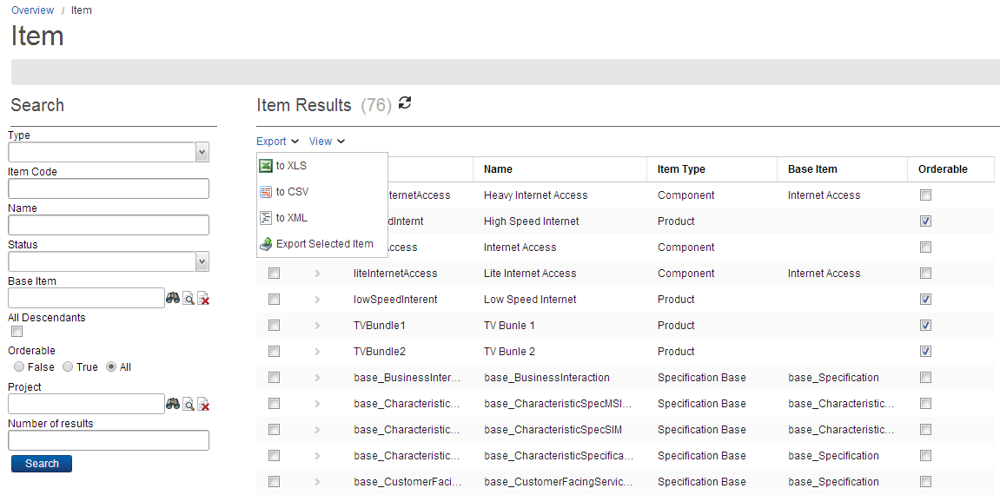

You can export catalog objects, such as projects, items, catalog hierarchies, code tables, and so on as one of the following file formats:
The ECM provides an option to export all instances of a particular catalog objects. The following are the steps to export all item objects, which are similar for most of the objects in catalog:

You can export selected objects to different file formats. The following are the steps to export selected item objects, which are same for most of the objects in catalog:
| Field | Description |
|---|---|
| Path Accessible by Application | This field allows you to specify the folder path to save the exported data. By default, the data is exported in the XML format. The default name of the file is exportedCatalog.xml which is editable. |
| Log general information | When selected, this check box logs the information of imported data. |
| Exclude expired items | When selected, the expired items are not exported. |
| Updated since | This field allows you to specify a date that is used to filter the catalog data. |
| Export Domains | When selected, the domains are also exported along with catalog data. |
| Include Childs | When selected, the child projects are also included in the export file. |
Note: The export fields may differ for different catalog objects (for example, the Include Child field is available only for the Projects object).
Note: You can follow the same steps to export all or selected catalog objects in CSV, XML, and ZIP file formats.